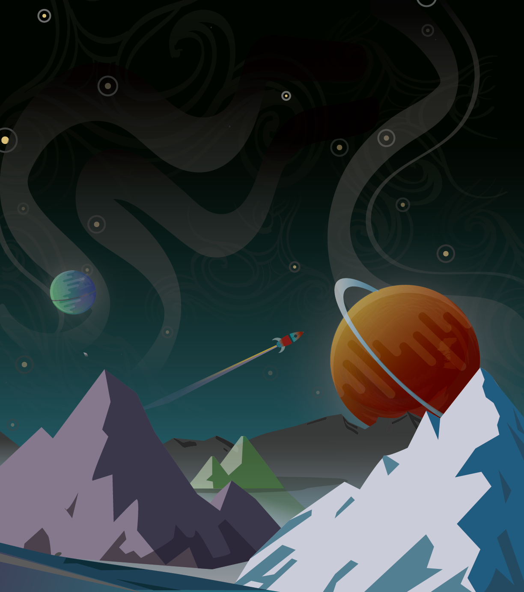
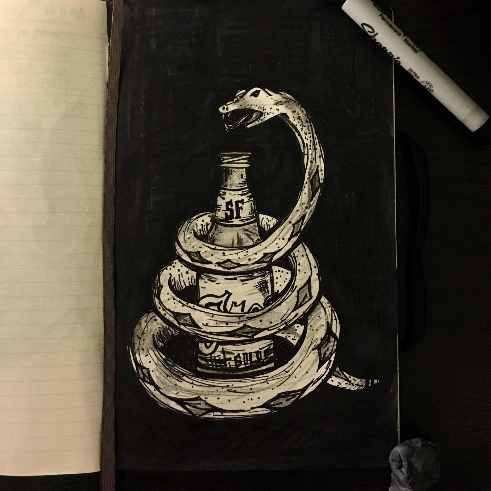

100 Days of Design
User Interface, Flat/Graphic Design
• Sketch App
• Adobe Illustrator
• Adobe Photoshop
• Pen and Paper
This is a personal design challenge where I am exploring and practicing various forms of design that I am currently interested in: User Interface elements, flat design, hand-lettering, illustration, and more. By putting in an hour or two every day, I hope to learn more about myself, current trends, my process of designing, new forms of design, and prioritization/time management. Some struggles I have already encountered are, for example, choosing sleep or staying up to put in hours to become a better designer. Prioritization is foundational. I'll be updating this page as I accumulate more work, check back!
1. UI - Sign Up Form

2. UI - Credit Card Payment

3. UI - Landing Page

4. UI - Calculator

5. UI - Music Player

6. Flat Design - Snowy Mtns

7. Flat Design - Think Outside
8. Flat Design - Misty

9. Client - SLO Brew

10. Galactic

11. Web Design Challenge - Mozilla

12. CS project asset


Check out a game I made for my CSC game design class! http://www.greenfoot.org/scenarios/19141
(To play the game you must have the Java Runtime Environment installed.)
13. Liquid Motivation

14. Snapchat Geofilter!

15. Ink Study 1

16. Ink Study 2

17. Ink Study 3
16. Ink Study 4

16. Ink Study 5